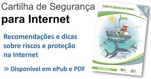

Sobre a Cartilha de Segurança para Internet. A Cartilha de Segurança para Internet é composta por um conjunto de documentos com recomendações e dicas sobre como o usuário de Internet deve se comportar para aumentar a sua segurança e se proteger de possíveis ameaças.
Engenharia social
A segurança da informação é uma área crucial em qualquer organização, especialmente em um mundo cada vez mais digitalizado. Ela se concentra na proteção dos dados e sistemas contra acesso não autorizado, uso indevido, alteração, destruição ou roubo. A segurança da informação abrange uma ampla gama de medidas, incluindo políticas, procedimentos, tecnologias e práticas de gestão de riscos, com o objetivo de garantir a confidencialidade, integridade e disponibilidade das informações.
A Cartilha de Segurança para Internet, publicada pelo CERT.br (Centro de Estudos, Resposta e Tratamento de Incidentes de Segurança no Brasil), é uma valiosa ferramenta educacional que visa fornecer orientações práticas sobre segurança da informação para usuários de internet. Ela aborda uma variedade de tópicos, desde boas práticas de senha até proteção contra malware e phishing. A cartilha destaca a importância da conscientização e educação dos usuários, além de fornecer dicas e recomendações claras para aumentar a segurança online.
A Cartilha de Segurança para Internet do CERT.br, destacam-se três áreas principais. Primeiro, são abordadas as medidas para proteger senhas e contas online, enfatizando a importância de senhas fortes e únicas, além da ativação da autenticação de dois fatores sempre que possível. Em segundo lugar, são discutidas práticas para proteger dispositivos e redes, incluindo a instalação de software antivírus, atualizações regulares de sistema operacional e configuração segura de redes Wi-Fi. Por fim, a cartilha também destaca a importância da conscientização sobre ameaças online, como phishing, engenharia social e fraudes, e oferece orientações para identificar e evitar essas ameaças. Esses são apenas alguns dos muitos temas abordados na cartilha, que serve como um recurso valioso para indivíduos e organizações em busca de melhorar sua segurança online.